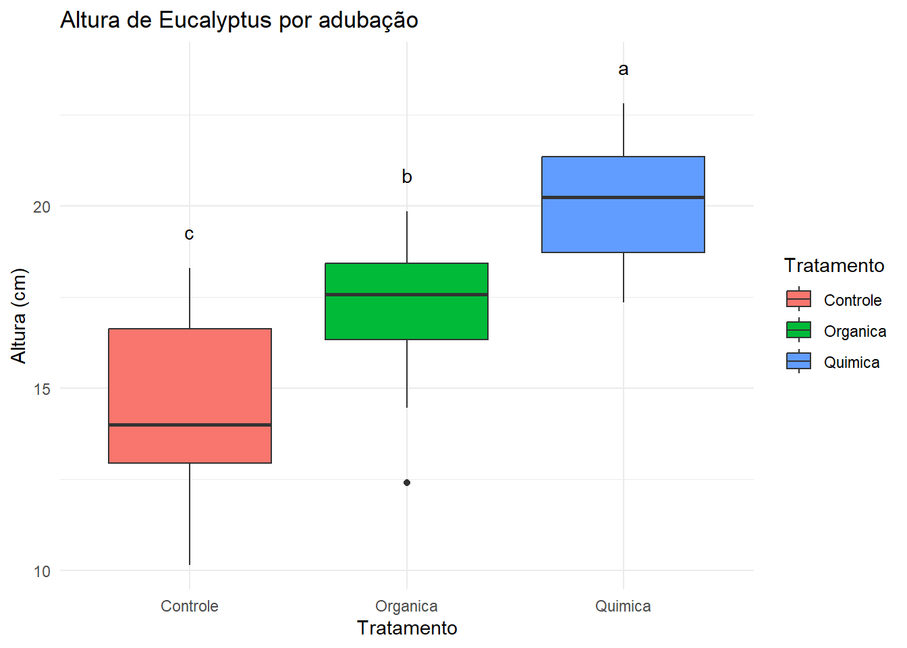
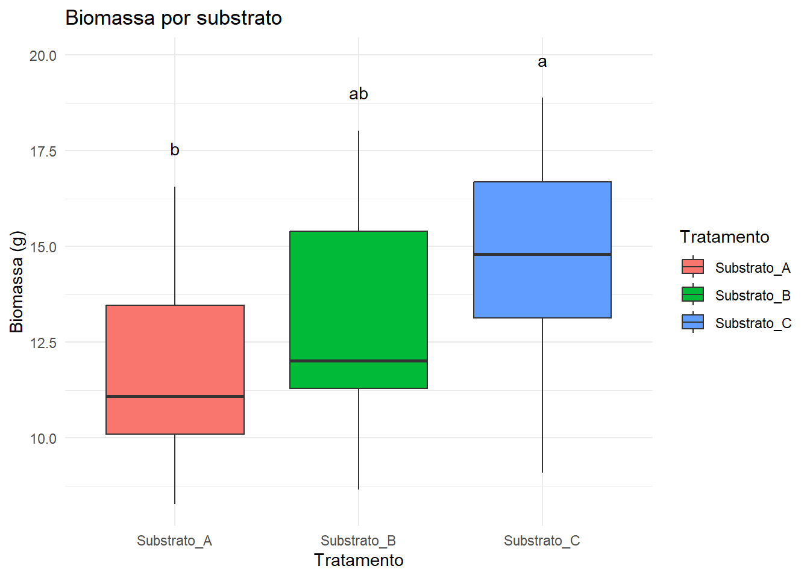

Na aula passada, a ANOVA mostrou que há diferença global entre os tratamentos.
Mas o(a) engenheiro(a) florestal precisa de algo mais prático: quais tratamentos são diferentes e se pode confiar nesses resultados.
É aqui que entram os pressupostos e os testes de médias.
Dica
📌 Na prática: só podemos recomendar um tratamento se tivermos confiança estatística de que o resultado não é fruto do acaso ou de distorções.
5.2 🎯 Objetivos do capítulo
Explicar o que são pressupostos e por que importam.
Entender como funcionam os testes de médias.
Gerar e interpretar boxplots com letras do Tukey.
Consolidar a análise com dois experimentos florestais.
5.3 🧠 O que são pressupostos?
A ANOVA é um modelo estatístico e, como todo modelo, depende de condições para funcionar.
Essas condições são chamadas de pressupostos.
Normalidade dos resíduos
Os “erros” do modelo devem seguir uma distribuição aproximadamente normal.
Garante que os p-valores do teste F sejam confiáveis.
Homogeneidade das variâncias
A variabilidade dentro dos grupos deve ser semelhante.
Se um grupo tem variância muito maior, ele “puxa” a decisão.
👉 Importância: Se os pressupostos não forem atendidos, a conclusão da ANOVA pode ser enganosa.
No R, verificamos com:
- Shapiro-Wilk (normalidade)
- Levene (homogeneidade)
5.4 🌳 O que são testes de médias?
A ANOVA responde apenas: “todas as médias são iguais?”
Se a resposta é “não”, surge a pergunta: “quais grupos diferem entre si?”
O teste de médias compara pares de médias.
Em geral eles tem como principio o calculo de uma distância mínima significativa.
O teste de Tukey HSD é o mais comum.
Resultado:
Texto com pares significativos.
Gráfico com intervalos de confiança.
Boxplot com letras: tratamentos com mesma letra não diferem.
👉 Na prática florestal: é essa etapa que permite recomendar um substrato ou adubação.
Df Sum Sq Mean Sq F value Pr(>F)
Tratamento 2 154.0 77.02 15.25 3.7e-05 ***
Residuals 27 136.4 5.05
---
Signif. codes: 0 '***' 0.001 '**' 0.01 '*' 0.05 '.' 0.1 ' ' 1
5.5.2 2. Verificação dos pressupostos
Código
shapiro.test(residuals(mod_alt))
Shapiro-Wilk normality test
data: residuals(mod_alt)
W = 0.97756, p-value = 0.7577
Código
leveneTest(Altura_cm ~ Tratamento, data = euca)
Levene's Test for Homogeneity of Variance (center = median)
Df F value Pr(>F)
group 2 0.5323 0.5933
27
5.5.3 3. Teste de médias (Tukey) com letras
Código
tk <-HSD.test(mod_alt, "Tratamento", group =TRUE)tk$groups
Altura_cm groups
Quimica 20.008 a
Organica 17.065 b
Controle 14.461 c
Código
# 1) Transformar o tk$groups em um data frame com colunas explícitasletras_df <- tk$groups %>%rownames_to_column(var ="Tratamento") %>%rename(letra = groups)# 2) Posição vertical (y) das letras: máximo por tratamento + uma folguinhatopos <- euca %>%group_by(Tratamento) %>%summarise(y =max(Altura_cm, na.rm =TRUE) +1, .groups ="drop")# 3) Juntando os dois conjunto de dadosletras_df <- letras_df |>left_join(topos, by ="Tratamento")
Código
# 4) Gráfico final com letrasggplot(euca, aes(x = Tratamento, y = Altura_cm, fill = Tratamento)) +geom_boxplot() +geom_text(data = letras_df,aes(x = Tratamento, y = y, label = letra),inherit.aes =FALSE) +labs(title ="Altura de Eucalyptus por adubação",x ="Tratamento", y ="Altura (cm)") +theme_minimal()

Como ler: Tratamentos com mesma letra não diferem; letras diferentes = diferença significativa.
5.6 🌿 Experimento 2 – Mudas nativas (Substratos)
Contexto: Viveiro de nativas para restauração precisa escolher o substrato mais eficiente. Delineamento: 3 substratos, n mudas/tratamento; variável: Biomassa.
mudas <-read_csv("dados/crescimento_mudas.csv", show_col_types =FALSE)mod_bio <-aov(Biomassa_g ~ Tratamento, data = mudas)summary(mod_bio)
Df Sum Sq Mean Sq F value Pr(>F)
Tratamento 2 119.3 59.65 8.727 0.000351 ***
Residuals 87 594.7 6.84
---
Signif. codes: 0 '***' 0.001 '**' 0.01 '*' 0.05 '.' 0.1 ' ' 1
5.6.2 2. Pressupostos
Código
shapiro.test(residuals(mod_bio))
Shapiro-Wilk normality test
data: residuals(mod_bio)
W = 0.97442, p-value = 0.07272
Código
leveneTest(Biomassa_g ~ Tratamento, data = mudas)
Levene's Test for Homogeneity of Variance (center = median)
Df F value Pr(>F)
group 2 0.4823 0.619
87
5.6.3 3. Teste de médias (Tukey) com letras
Código
tk_bio <-HSD.test(mod_bio, "Tratamento", group =TRUE)tk_bio$groups
Biomassa_g groups
Substrato_C 14.55633 a
Substrato_B 13.00967 ab
Substrato_A 11.74067 b
Código
# 1) Transformar o tk$groups em um data frame com colunas explícitasletras_df <- tk_bio$groups %>%rownames_to_column(var ="Tratamento") %>%rename(letra = groups)# 2) Posição vertical (y) das letras: máximo por tratamento + uma folguinhatopos <- mudas %>%group_by(Tratamento) %>%summarise(y =max(Biomassa_g, na.rm =TRUE) +1, .groups ="drop")# 3) Juntando os dois conjunto de dadosletras_df <- letras_df |>left_join(topos, by ="Tratamento")
Código
# 4) Gráfico final com letrasggplot(mudas, aes(x = Tratamento, y = Biomassa_g, fill = Tratamento)) +geom_boxplot() +geom_text(data = letras_df,aes(x = Tratamento, y = y, label = letra),inherit.aes =FALSE) +labs(title ="Biomassa por substrato",x ="Tratamento", y ="Biomassa (g)") +theme_minimal()

5.7 📝 Exercícios
No experimento com Eucalipto, aplique Tukey também para Diâmetro e Biomassa.
No experimento com Mudas, faça o mesmo para Altura.
Analise os resultados e discuta: os tratamentos “melhores” coincidem entre variáveis?
5.8 ✅ Síntese
Pressupostos = condições para que a ANOVA seja válida.
Teste de médias = detalha onde estão as diferenças.
Boxplots com letras tornam a interpretação imediata.